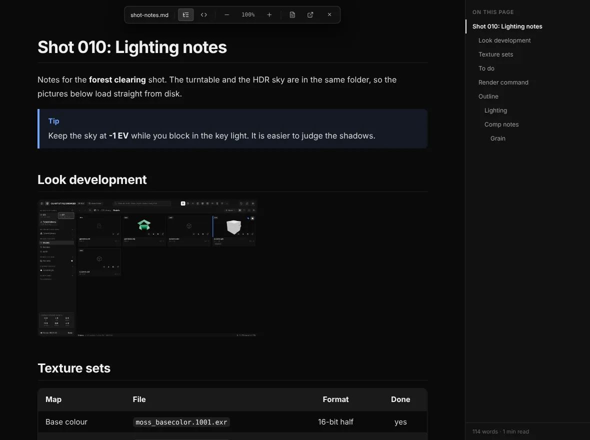

Deep dive
Markdown documents
The Markdown viewer: a clean reading page with pictures, GIFs, tables, code, a heading outline and links, for .md files.
Opening a Markdown file
.md and .markdown files open in a reading page instead of a plain text view. Open one with Enter or a double-click, or press Space in the folder view for a quick look. The viewer only shows the document; it never changes the file.

What it shows
- Headings, paragraphs, bold, italic, ~~strikethrough~~, quotes and lists.
- Tables, with the column alignment from the file.
- Task lists with ticked and empty boxes.
- Code blocks with colours for common languages (JavaScript, Python, Rust, C and C++, GLSL, MEL, shell, JSON, YAML and more) and a Copy button on each block.
- Call-outs written as
> [!NOTE],> [!TIP],> [!IMPORTANT],> [!WARNING]and> [!CAUTION]. - A
---properties block at the top of the file, tucked into a "Document properties" fold.
The page follows the colour theme you chose in Settings, so it is light in the Light theme and dark in the others.
Pictures, GIFs and video
Pictures in the document are loaded from where the file says they are:
- Next to the document.
showsshots\lookdev.pngfrom the folder the.mdfile is in.../goes up a folder. - A full path or a network share. A path such as
D:\Library\ref.jpgor\\studio\library\ref.jpgworks too, so a document can show files on a network drive. - A web address. Pictures from
https://addresses show when you are online.
PNG, JPG, WebP and BMP pictures show as they are, and animated GIFs play. Click a picture to see it large, and click again or press Esc to close it. A picture that cannot be found is shown as a small note with its name instead of a broken symbol. <video> and <audio> tags play the file next to the document.
The outline
The panel on the right lists the headings. Click one to jump to it; the heading you are reading is highlighted. Press O to hide or show it. In a narrow window the outline hides itself to leave room for the text.
Links
- A link to a heading in the same document (
#shot-notes) scrolls to it. - A link to another
.mdfile opens it in the viewer. Back in the toolbar (orBackspace) returns to the document you came from. - A web address opens in your browser.
- A link to any other file or folder opens it with its default program.
Reading comfortably
+and-, orCtrl+ mouse wheel, make the text larger or smaller.Ctrl+0goes back to the normal size. The size is remembered.Sswitches between the formatted page and the Markdown text, which you can select and copy.Page DownandSpace,Page UpandShift+Space,Home,Endand the arrow keys scroll.LeftandRightopen the previous or next Markdown file in the folder.- Very large files show their first 2 MB, with a note at the top; Open in the toolbar opens the whole file in your default program.
Safety
A Markdown file is only text and cannot run anything in the app. Scripts, forms, frames and styles inside a document are removed, and links to anything other than web, mail or local files are blocked, so opening a file from someone else is as safe as opening a picture.
Found a mistake or something missing? Edit this page on GitHub.